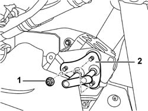
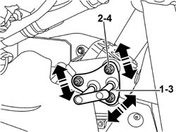

7050A45 STRIKER OF ONE SPLIT REAR SEAT SQUAB FASTENING RELEASE DEVICE ONE LH OR RH R R
- Path
- Procedures > 70 FITTINGS > 7050 REAR SEATS > 7050A REAR SEAT ASSEMBLY > 7050A45 STRIKER OF ONE SPLIT REAR SEAT SQUAB FASTENING RELEASE DEVICE ONE LH OR RH R R
- Kind
- repair procedure (removal / refitting; the operation number is the code)
- Applies to
- all engines; all production periods
- Interactive page
- https://sloeber94.github.io/elrnDB-aGt/en/#/125001947
Applies to: all engines; all production periods
 Removing
Removing
 Refitting
RefittingLower the rear seat backrest.
Op. 7040G30 BOOT LIGHT BULB HOLDER - R R
(right side
Op. 7065C86 BOOT/LOAD PLATFORM POWER UNIT HOUSING - R R
Connect the electrical connections.
Op. 5570T85 CD/AUDIO PLAYER LOADER - R R
Connect the electrical connections.
Op. 7040B35 One luggage compartment COMPARTMENT left or right RR
1. Unscrew the nuts.
2. Remove the striker.

Applies to: all engines; all production periods
Refitting
RemovingCheck the striker is intact and undamaged.
1. Fit the striker.
2. Screw in the fixing nuts, without tightening them.
3. Move the striker into the correct position, using the slotted holes. Permitted adjustment movements are indicated by arrows.
4. Tighten the fixing nuts to the recommended torque.

Applies to: all engines; all production periods
Check that the backrest engages correctly and, if necessary, repeat the adjustment.
Op. 7040B35 One luggage compartment COMPARTMENT left or right RR
Op. 5570T85 CD/AUDIO PLAYER LOADER - R R
(left side)
Op. 7065C86 BOOT/LOAD PLATFORM POWER UNIT HOUSING - R R
(left side)
Op. 7040G30 BOOT LIGHT BULB HOLDER - R R
(right side)
Topics linked from this page (5)
- 5570T85 CD/AUDIO PLAYER LOADER - R R
- 7040B35 One luggage compartment COMPARTMENT left or right RR
- 7040G30 BOOT LIGHT BULB HOLDER - R R
- 7040H80 PARCEL RACK
- 7065C86 BOOT/LOAD PLATFORM POWER UNIT HOUSING - R R
Topics that link to this page (9)
- 3340A35 LEFT REAR WHEEL RPM SENSOR - R R
- 3340A37 RIGHT REAR WHEEL RPM SENSOR - R R
- 3340A44 REAR WHEEL RPM SENSORS (TWO) R R
- 5505C28 INTERGRATED ENGINE BAY AND ABS SYSTEM WIRING - R R
- 5505C41 CABIN WIRING - R R
- 7050A13 SPLIT REAR SEAT LEFT SQUAB R R
- 7050A14 SPLIT REAR SEAT ASSEMBLY - R+R
- 7050A15 SPLIT REAR SEAT RIGHT SQUAB R R
- 7050A43 ONE SPLIT REAR SEAT SQUAB FASTENING RELEASE DEVICE R R